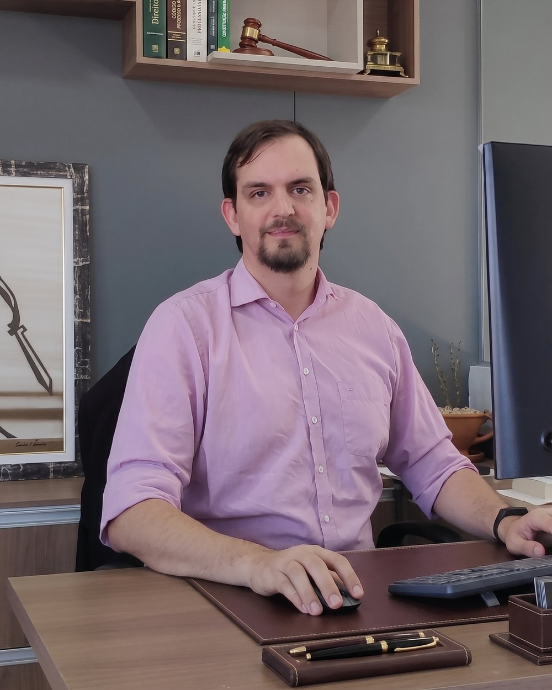

Sobre André Chormiak

Advocacia de acompanhamento próximo
Advogado, Especialista em Advocacia Cível pela Fundação Escola Superior do Ministério Público, RS (2023) e Direito Administrativo e Administração Pública pela Faculdade de Direito da Universidade Federal de Mato Grosso (2015).
Possui ainda graduação em Ciências Contábeis pela Universidade Federal de Mato Grosso (2014) e graduação em Direito pela Universidade Federal de Mato Grosso (2010). Atualmente é sócio-administrador — André Chormiak Assessoria e Consultoria Jurídica. Atua em Direito Administrativo, especialmente licitações, Direito Cível e Processual Civil, Direito Empresarial e Direito Eleitoral.
Três compromissos
Linguagem simples
Cada etapa é explicada sem jargão, para que a decisão seja do cliente.
Discrição
Informações do caso circulam apenas entre cliente e advogado responsável.
Retorno previsível
Prazos de resposta combinados no início do trabalho e cumpridos.
Falar com o escritórioA relação começa com uma conversa honesta sobre o que é possível — e sobre o que não é.
André ChormiakAdvogado responsável